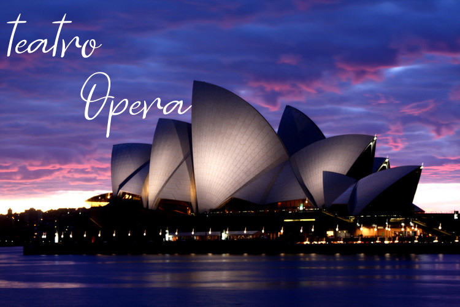
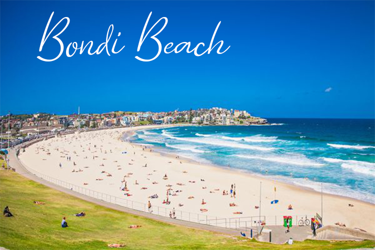

La construcción del Teatro de Opera de Sydney comienza en el año 1959 y culmina con la inauguración en 1973. Alberga a las mas importantes compañías de ballet, opera y teatro como también a la Orquesta sinfónica de Sydney.
En este teatro se han realizado más de 100 mil eventos y ha recibido la visita de más de 100 millones de personas. Reconocido a nivel mundial por su imponente arquitectura y por un diseño muy particular de sucesivas capas de concreto enclavijadas, perteneciente al estilo gótico.

teatro opera
Bondi Beach
Bondi Beach es una popular playa y el nombre del suburbio que la rodea en Sídney, Australia. En el censo de 2006 la población se calculaba en 10.373 habitantes. Bondi Beach se encuentra 7 kilómetros al este del distrito de negocios del centro de Sídney, en la región de gobierno local de Waverley Council, en los Suburbios Orientales. Bondi, North Bondi y Bondi Junction son suburbios vecinos.

playa australiana
Puerto Darling
Darling Harbour es una localidad de Sídney, Nueva Gales del Sur, Australia. Se trata de una gran calle peatonal de recreo y que está situado en las afueras del oeste del distrito central de negocios de Sídney. La localidad se extiende hacia el norte de Chinatown, a lo largo de ambos lados desde la bahía de Cockle a King Street Wharf, en el este, y al barrio de Pyrmont en el oeste. Cockle Bay es uno de los canales que conforman el puerto Darling, que se abre al norte en la bahía de Sídney. El recinto y su entorno inmediato son administrados independientemente del área de gobierno local de la ciudad de Sídney, por un gobierno de Nueva Gales del Sur la autoridad legal del gobierno del estado, la Sydney Harbour Foreshore Authority